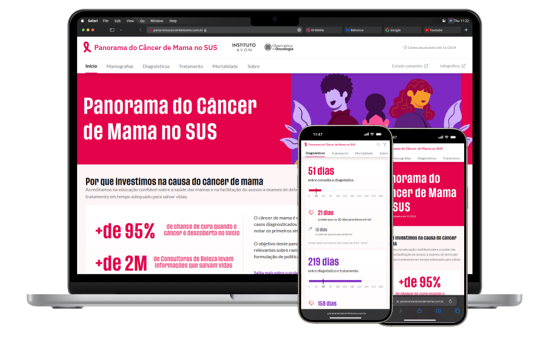

Simone Hoffmann
Data Visualization Product Designer
About
I’m a Brazil based Product & DataViz Designer with a strong background in UI and web design, simplifying complex data into accessible platforms that ensure an increase in engagement and enhance the understanding of the business.
Currently, I'm at Cluster, working mainly on analytics projects. Previously, I worked on institutional websites and e-commerce at MINT Interactive Lab. My work aims to create engaging platforms that streamline workflows by optimizing usability and making tasks effortless.
Featured Projects
2x Prize winning
Brazilian National Map of Gender-Based Violence
Website Design for Natura Institute by Brazilian Senate

Overview of Breast Cancer in Brazil’s Unified Health System (SUS)
Website Design for Natura Institute
ENGIE Brazil
Website redesign - Company repositioning
View work
Plastubos
Business Website Design
View work